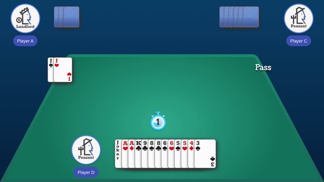
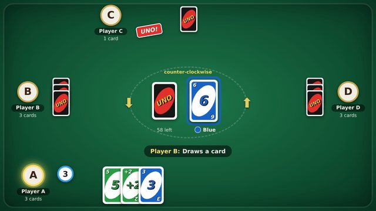
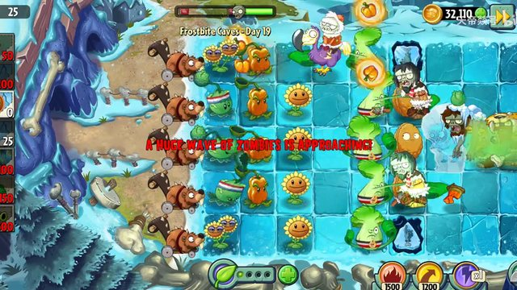
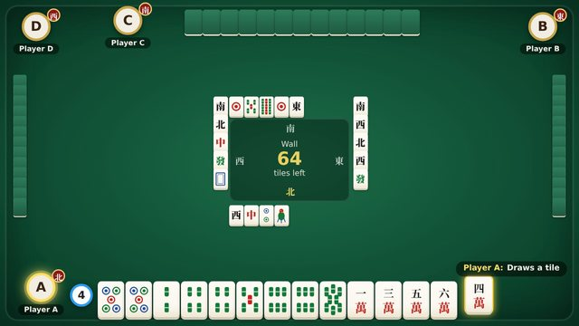
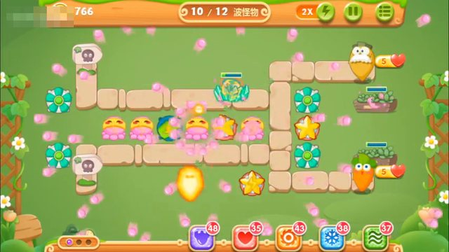
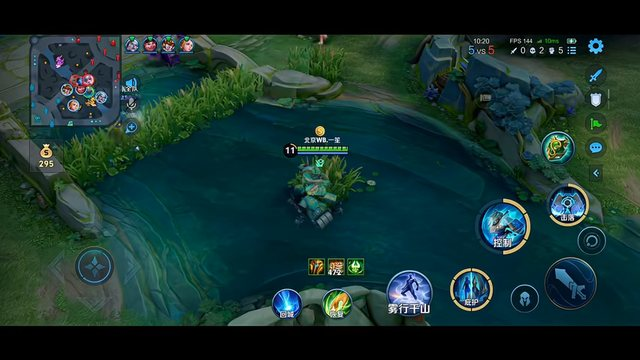
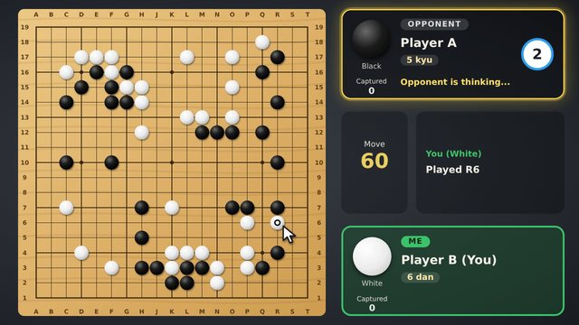
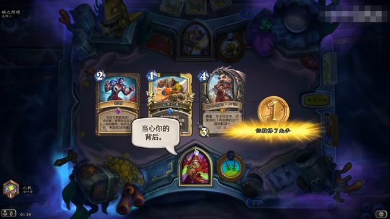
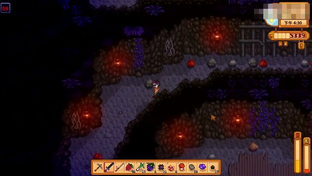
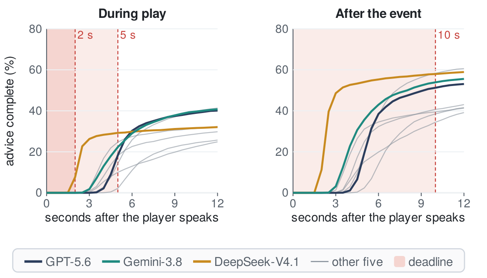

Reactive Answering & Proactive Intervention
CoPlay Learning When to Speak and What to Say as Game Companions
Watching a live screen beside the player, a companion makes one coupled decision: whether this moment calls for speech, and what grounded, supportive advice to deliver before the window closes — while staying quiet for the other 92.6% of play.
recorded stream steps (120–151s)
amber band = required window 133.99–136.99s
120s130s140s150s
CoPlayer2 lines · sound
GPT-5.6-Sol3 lines
DeepSeek-V4.1-Flash3 lines
sound + supportin-window lineusefulchatwrong / noiseunobserved while generating
Unprompted stream · decision step 136s
No player question posed — model watches stream and decides to intervene.
"A Huge Wave of Zombies is Approaching!" flashes with only 25 sun left; a snowstorm ambush follows.
CoPlayer
Sound · Support 3/4
Another huge wave! Don't hoard sun, add Bonk Choys and Wall-nuts now
Warns of the wave and names Bonk Choys and Wall-nuts.
GPT-5.6-Sol
Not sound · Support 1/4
Huge wave incoming with only 25 sun—grab those suns fast and reinforce lane four, where the armored zombie is deepest.
Warns of the wave but sends the defense to lane four.
DeepSeek-V4.1-Flash
Not sound · Support 0/4
Sun's down to 25 and a zombie's chewing your right-side Threepeater — hold off on planting, let the lane clear first.
Misses the wave and says hold off planting.
818 videos
9 Games · 97.7 Hours of Play
5,153 consensus events + disjoint 1,635-video Train split
92.6%
Quiet Gameplay Duration
Required windows span 7.4% of play; restraint is scored directly
34.3%2.4×
Joint Advice & Support (StratEmo)
vs. 14.5% best of 8 frontier models (Gemini-3.8-Flash)
+43.7 pp
Proactive TimingLift
Above frequency-matched random speaker (vs. +28.0 pp GPT-5.6-Sol)
The Gap in Video Benchmarks
A posed question already tells a model when to speak.
Question-driven video benchmarks trigger the model whenever a reply is expected and never penalize unnecessary chatter. A real game companion sits beside the player: it answers urgent questions before the moment passes, and intervenes unprompted only when silence would cost the play.

Track 1 · Reactive
Answer When Asked
Given 16 frames from the preceding 60 seconds plus a player utterance (9,103 questions), deliver grounded tactical advice and fitting support before the window closes.
Track 2 · Proactive
Decide Every Δt
Given one opening request, stream the full match (818 videos) and choose at every step whether to speak or stay silent across 4,045 required intervention windows.
01 · GROUNDED
Tied to the Next Move
Replies must name actionable on-screen mechanics rather than narrating the scene like a spectator commentator.
02 · SUPPORTIVE
Situated Player Empathy
Encouragement earns credit only when anchored to the live game state and aligned with the player's emotional vibe.
03 · TIMELY
Complete While Actionable
85.4% of in-play questions carry a 2s deadline; advice still streaming after the window closes counts as missed.
04 · RESTRAINED
Quiet by Default
Required windows occupy just 7.4% of play. Constant commentary racks up off-window noise and quota overruns.
CoPlayBench
Consensus event windows across nine game genres.
Every benchmark score traces back to a consensus gameplay event annotated independently by three frontier models, filtered by temporal overlap, and unanimously accepted by three human annotators.
Stage 01 · Tri-Model Proposal
2,534 First-Person Videos
Claude-Opus-5.5, GPT-6.1-Sol, and Gemini-4-Argon independently mark candidate events; ≥2-annotator temporal overlap filters 21,494 proposals to 15,689 consensus nodes.
Stage 02 · Human & Timing Audit
5,153 Verified Bench Events
Three human raters keep only unanimously accepted events across 818 Bench videos (97.7h), shifting 430 speaking windows so ground truth uses no hidden engine numbers.
Stage 03 · Leak-Free Split
1,635 Disjoint Train Videos
Split 1:2 by full match or stage group (e.g., all 10 pro perspectives of an Honor of Kings match stay on one side) for shared supervision and reinforcement learning.
![Two-part diagram. (a) Building CoPlayBench: 2,534 first-person videos from 9 games are annotated independently by Claude-Opus-5.5, GPT-6.1-Sol and Gemini-4-Argon; events whose time spans overlap are retained, 21,494 to 15,689 events. One retained Honor of Kings teamfight shows a player question, a 728 to 732 second pre-event alert window, a reference reply and a must-not item. (b) Evaluation: the reactive track answers from 16 frames of the last 60 seconds and is scored on game, player and time; the proactive track observes every step, and a timeline shows two required windows hit and one missed.](assets/figures/coplaybench-figure2.png)
Nine Games, Nine Intervention Rhythms
Fast card games demand rapid-fire intervention (Dou Dizhu: 27.0% window share, 4.2s median window), while open-ended simulation rewards patience (Stardew Valley: 0.8% window share, 8.0s median window).

UNO
Shedding Card
Plants vs. Zombies 2
Lane Defense
Mahjong
Tile Strategy
Carrot Fantasy
Tower Defense
Honor of Kings
5v5 MOBA
Go
Board Territory
Hearthstone
Deck Strategy
Stardew Valley
Life / Dungeon SimInspect Exact Per-Game Dataset Breakdown (Table 1)Table 1
Nine games set nine different timing problems: Dou Dizhu needs a reply for 27.0% of its video, Stardew Valley for 0.8%.
| Game | Videos | Hours | Events | Window (s) | Cover (%) |
|---|---|---|---|---|---|
| Honor of Kings | 100 | 26.4 | 923 | 8.0 | 7.0 |
| Dou Dizhu | 100 | 2.4 | 552 | 4.2 | 27.0 |
| Mahjong | 100 | 5.2 | 482 | 6.0 | 12.0 |
| UNO | 99 | 3.8 | 533 | 5.0 | 17.8 |
| Go | 100 | 10.2 | 591 | 4.0 | 5.7 |
| Plants vs. Zombies 2 | 69 | 4.5 | 340 | 8.0 | 15.3 |
| Carrot Fantasy | 126 | 10.3 | 722 | 7.0 | 11.2 |
| Hearthstone | 91 | 15.6 | 751 | 5.0 | 5.5 |
| Stardew Valley | 33 | 19.2 | 259 | 8.0 | 0.8 |
| Total | 818 | 97.7 | 5,153 | 6.0 | 7.4 |
Headline Metric 1 · Content × Empathy
StratEmo (Reactive & HitStratEmo)
Credit = 1[Strategy Sound] × 1[Situated Support ≥ 3/4]
Separates true companionship from dry wiki tooltips or hollow cheerleading: a reply scores 1 only when its tactical advice satisfies the event's must-mention criteria without must-not violations and delivers context-fitting emotional support.
Headline Metric 2 · When to Speak
TimingLift (Proactive Stream)
TimingLift = Recall(U) − E[Recall(Uniform Random Speaker, |Ũ| = |U|)]
Raw window recall rewards talking nonstop. Subtracting a random speaker that places the exact same utterance count uniformly over the stream isolates genuine intervention timing (0 pp = random timing).
CoPlayer
One shared supervised backbone, then two specialized RL policies.
Built on Qwen3.8-27B (vision tower frozen), CoPlayer first learns grounded replies and step-level speak-or-silence decisions jointly, then diverges into two GRPO policies whose training-only reward judges never enter inference.
![Method diagram. (a) A play session: an illustrated game scene with a player question and a stream every delta t; CoPlayer says: It's charging. Dodge left, then heal. (b) Learning to accompany: one shared supervised model on a Qwen3.8-27B backbone with the vision tower frozen, then two separate reinforcement-learning runs. The reactive run uses a training-only reward judge for content, emotion and format; the proactive run uses a decision-first reward. Only the weights are deployed: answer the player's question, or at every step speak or stay silent.](assets/figures/coplayer-method-illustrated-v1.png)
Stage 1 · Shared SFT
Unified Perception & Restraint
Trained on 1,255 Train videos: 12,914 reactive QA examples and 27,843 step-level proactive speak/silence examples produce one checkpoint capable of both answering and withholding speech.
Stage 2A · Reactive GRPO
Joint Advice & Support Policy
Optimized on 302 held-out Train videos with a composite reward weighting tactical grounding highest and situated emotional support nearly twice raw emotion recognition, plus word-limit compliance.
Stage 2B · Proactive GRPO
Decision-First + All-Silent Fix
Scores the speak/silence decision before evaluating text. When all 8 rollouts in a required window stay silent and group advantages collapse to zero, false decision tokens receive a direct −0.3 advantage.
Decision-First Proactive Reward
Missing a required window (−0.80) costs more than off-window chatter (−0.35).
The ordering encodes companion judgment. Any reward that pays +0.10 for quiet steps tempts a policy into total silence. Penalizing missed required windows at −0.80 forces the model to speak when the player faces a live threat, while jumping from +0.35 to +0.85+ only when advice also carries situated emotional support.
The training reward judge is a separate checkpoint from the benchmark judge; on 2,000 paired samples they agree on 93.3% of strategy verdicts and 84.6% of emotion verdicts.
Inspect Exact Step-Level Proactive Reward Function (Table 8)Table 8
The reward states the priority out loud: silence inside a required window costs more than chatting outside one.
| Outcome of the step | Reward |
|---|---|
| Malformed JSON or flag disagreement | −1 |
| Inside a required window | |
| silent | −0.8 |
| advice wrong or missing | −0.55 |
| sound advice, s < 3 | 0.35 + 0.05 c |
| sound advice, s ≥ 3 | 0.85 + 0.05 c + 0.05 [s = 4] |
| no advice needed | −0.10 + 0.25 c + 0.65 s/4 |
| Outside every window | |
| silent | 0.10 |
| useful line | 0.35 |
| chat | −0.35 |
| noise / wrong | −0.5 / −0.8 |
| verbatim repeat | −0.6 |
Headline Results
Frontier models read the screen, then miss the companion judgment.
Evaluated against eight frontier multimodal models under identical prompts and frames, CoPlayer more than doubles the best frontier model on joint strategy-and-support (34.3% vs. 14.5%) and reaches +43.7 pp TimingLift at 1.9 lines/min.
Headline Leaderboard Across Both Tracks
Switch metrics across Reactive (9,103 questions) and Proactive (818 streams).
Sound advice and support of at least 3 of 4, in the same reply.
CoPlayer
34.3
Gemini-3.8
14.5
Qwen3.8-Max
12.3
Claude-5.5
8.8
Kimi-K3
8.6
GPT-5.6
7.9
Doubao-2.1
6.8
DeepSeek-V4.1
6.4
HY4
5.7
Base → SFT → RL
higher is better · CoPlayer #1/9
Why TimingLift Beats Raw Recall
Chattering 8.8 lines/min buys Recall by luck; CoPlayer hits 67.4% Recall at 1.9 lines/min (+43.7 pp).
Model Recall
Random Speaker
TimingLift (pp)
Full Reactive Track Benchmark — 11 Models × 11 Metrics on 9,103 Questions (Table 2)Table 2
Frontier models get the facts right and the judgment wrong: at most 14.5% of advice questions pair sound strategy with fitting support, against CoPlayer’s 34.3% and the reference replies’ 99.1%.
| Game | Player | Time | Rules | ||||||||
|---|---|---|---|---|---|---|---|---|---|---|---|
| Model | GroundF1↑ | StratAcc↑ | FactAcc↑ | EmoAcc↑ | SupQual↑ | StratEmo↑ | TTFT↓ | TTUA↓ | OnTime↑ | Violation↓ | LenOK↑ |
| HY4 | 34.6 | 24.7 | 70.4 | 47.4 | 36.4 | 5.7 | 5.9 | 7.0 | 10.3 | 25.3 | 84.1 |
| DeepSeek-V4.1-Flash | 31.4 | 25.5 | 63.7 | 44.6 | 34.5 | 6.4 | 1.9 best of the eleven models | 2.2 best of the eleven models | 29.4 best of the eleven models | 30.6 | 74.0 |
| Doubao-Seed-2.1-Pro | 34.3 | 21.7 | 70.6 | 57.0 | 37.8 | 6.8 | 3.3 second best | 4.1 second best | 15.8 | 25.0 | 96.3 |
| GPT-5.6-Sol | 42.1 | 29.3 | 78.2 second best | 51.9 | 40.8 | 7.9 | 5.2 | 5.1 | 17.0 | 21.0 | 90.5 |
| Kimi-K3 | 33.4 | 23.9 | 68.2 | 54.3 | 39.0 | 8.6 | 3.9 | 4.9 | 14.6 | 30.0 | 75.4 |
| Claude-Sonnet-5.5 | 38.6 | 32.8 | 73.5 | 42.3 | 37.8 | 8.8 | 4.8 | 5.5 | 18.1 | 26.9 | 50.9 |
| Qwen3.8-Max | 34.3 | 23.8 | 69.8 | 67.0 | 44.6 | 12.3 | 7.5 | 8.3 | 10.6 | 27.0 | 82.9 |
| Gemini-3.8-Flash | 39.7 | 31.1 | 69.0 | 54.8 | 41.1 | 14.5 | 4.7 | 4.8 | 19.6 second best | 25.9 | 94.0 |
| Local base and CoPlayer models | |||||||||||
| Base | 26.7 | 16.0 | 63.4 | 55.8 | 35.1 | 4.7 | 7.4† historical timing, not ranked | 20.2† historical timing, not ranked | 0.8† historical timing, not ranked | 30.9 | 81.9 |
| SFT | 48.8 second best | 38.6 second best | 67.7 | 83.2 second best | 57.4 second best | 29.0 second best | 5.4† historical timing, not ranked | 17.8† historical timing, not ranked | 0.9† historical timing, not ranked | 20.2 second best | 98.3 second best |
| CoPlayer | 55.1 best of the eleven models | 46.1 best of the eleven models | 84.5 best of the eleven models | 87.5 best of the eleven models | 61.5 best of the eleven models | 34.3 best of the eleven models | 6.4† historical timing, not ranked | 19.8† historical timing, not ranked | 0.5† historical timing, not ranked | 13.5 best of the eleven models | 99.0 best of the eleven models |
| Reference reply | 98.0 | 100.0 | 98.5 | 99.2 | 99.0 | 99.1 | –not reported | –not reported | –not reported | 0.4 | 99.0 |
Full Proactive Streaming Benchmark — 11 Models × 13 Metrics on 818 Videos (Table 3)Table 3
Read TimingLift, not Recall. The untrained base model leads raw Recall by talking 8.2 times a minute; CoPlayer reaches +43.7 at 1.9 lines a minute, and pays for it in NoiseRate.
| When to speak | Observation | What to say | When to stay silent | Speed | |||||||||
|---|---|---|---|---|---|---|---|---|---|---|---|---|---|
| Model | Recall↑ | Recall-S↑ | RandBase | TimingLift↑ | SeenRate↑ | Recall-O↑ | HitStrat↑ | HitSup↑ | HitStratEmo↑ | SpeakRate | NoiseRate↓ | QuotaOver↓ | TTFT↓ |
| DeepSeek-V4.1-Flash | 72.1 | 68.2 best of the eleven models | 60.8 | +11.3 | 74.7 | 96.6 best of the eleven models | 13.2 | 16.9 | 2.4 | 8.8 | 4.98 | 87.6 | 1.7 best of the eleven models |
| Kimi-K3 | 40.6 | 30.1 | 25.9 | +14.7 | 45.0 | 90.3 | 18.3 | 25.6 | 6.6 | 3.4 | 1.76 | 57.8 | 2.8 |
| Qwen3.8-Max | 57.0 | 47.9 | 40.8 | +16.2 | 59.8 | 95.3 | 13.0 | 20.8 | 3.1 | 5.3 | 3.26 | 82.6 | 2.8 |
| HY4 | 55.1 | 45.0 | 38.8 | +16.3 | 61.5 | 89.7 | 13.8 | 16.0 | 1.9 | 4.9 | 2.10 | 71.0 | 3.5 |
| Doubao-Seed-2.1-Pro | 73.9 second best | 67.6 second best | 55.4 | +18.6 | 77.3 | 95.7 second best | 10.4 | 18.1 | 2.3 | 7.7 | 4.72 | 91.9 | 2.0 second best |
| Claude-Sonnet-5.5 | 66.3 | 56.1 | 45.4 | +20.8 | 79.3 second best | 83.5 | 16.5 | 21.5 | 2.8 | 5.7 | 2.79 | 75.9 | 3.6 |
| Gemini-3.8-Flash | 40.5 | 20.5 | 17.8 | +22.7 | 69.0 | 58.6 | 19.8 | 29.8 | 8.0 | 1.5 | 0.64 second best | 24.1 second best | 4.1 |
| GPT-5.6-Sol | 73.9 second best | 55.6 | 45.9 | +28.0 | 82.1 best of the eleven models | 90.1 | 24.1 | 21.3 | 4.0 | 5.4 | 2.25 | 69.9 | 4.3 |
| Local base and CoPlayer models | |||||||||||||
| Base | 84.0 best of the eleven models | 80.1† historical timing, not ranked | 58.4 | +25.6 | 93.3† historical timing, not ranked | 90.0† historical timing, not ranked | 5.8 | 18.6 | 1.7 | 8.2 | 5.75 | 84.4 | 0.7† historical timing, not ranked |
| SFT | 55.0 | 45.2† historical timing, not ranked | 15.2 | +39.9 second best | 97.8† historical timing, not ranked | 56.3† historical timing, not ranked | 36.5 second best | 42.7 second best | 24.0 second best | 1.1 | 0.45 best of the eleven models | 16.6 best of the eleven models | 2.3† historical timing, not ranked |
| CoPlayer | 67.4 | 57.3† historical timing, not ranked | 23.7 | +43.7 best of the eleven models | 97.8† historical timing, not ranked | 68.9† historical timing, not ranked | 48.2 best of the eleven models | 45.2 best of the eleven models | 31.2 best of the eleven models | 1.9 | 0.97 | 33.1 | 2.1† historical timing, not ranked |
SFT → RL Checkpoint Shift
What Reinforcement Learning Gained — and Paid For
Every proactive metric moves in the direction the reward incentivized, including higher chatter during quiet stretches.
StratEmo
Reactive sound advice + support
29.0% → 34.3%
HitStratEmo
First in-window proactive line sound
24.0% → 31.2%
TimingLift
Gain over matched random speaker
+39.9 → +43.7 pp
Recall
Required windows hit at step time
55.0% → 67.4%
NoiseRate
Off-window chat/noise lines per min
0.45 → 0.97 /min
QuotaOver
Quiet spans exceeding talk budget
16.6% → 33.1%
Live Deadlines & Honest Scope
Fast In-Play Deadlines Remain an Open Bottleneck


- Two thirds of advice questions still fail: CoPlayer reaches 34.3% StratEmo where reference replies score 99.1%, and misses 31.1% of observed proactive windows.
- 4-rater judge audit (420 replies): Human review agrees with Qwen3.8-Flash on 88.2%–98.8% of labels and tracks support/joint rankings closely (ρ = 0.904 reactive joint, 0.931 support), except reactive strategy (ρ = 0.421, p = 0.197).
- Recorded setting & retests: Checkpoints are benchmark-informed retests on disjoint data; audio and cross-session memory are absent.
Appendix Controls: Annotator Bias, In-Play vs. Aftermath Split & Human Audit (Tables 4, 5, 9, 11)Audit Tables
Timeliness collapses exactly where the decision is live: the eight frontier models are on time for 0.1% to 9.6% of in-play questions, against 23.3% to 55.2% after the event.
| StratEmo by question | OnTime by question | StratEmo by game | OnTime by game | |||||
|---|---|---|---|---|---|---|---|---|
| Model | In-play | After | In-play | After | Board | Visual | Board | Visual |
| HY4 | 5.9 | 5.3 | 0.1 | 23.6 | 6.4 | 5.1 | 0.3 | 16.3 |
| DeepSeek-V4.1-Flash | 6.5 | 6.1 | 9.6 | 55.2 | 6.9 | 6.0 | 15.6 | 37.7 |
| Doubao-Seed-2.1-Pro | 8.0 | 4.7 | 2.4 | 33.3 | 8.1 | 5.9 | 4.3 | 22.8 |
| GPT-5.6-Sol | 8.7 | 6.4 | 1.3 | 37.5 | 9.9 | 6.4 | 3.3 | 25.3 |
| Kimi-K3 | 9.0 | 7.9 | 1.2 | 31.9 | 9.5 | 7.9 | 3.8 | 21.1 |
| Claude-Sonnet-5.5 | 8.5 | 9.3 | 1.4 | 39.9 | 10.1 | 7.8 | 3.3 | 27.1 |
| Qwen3.8-Max | 12.6 | 11.8 | 0.8 | 23.3 | 15.9 | 9.6 | 1.9 | 15.8 |
| Gemini-3.8-Flash | 16.7 | 10.3 | 1.9 | 42.8 | 20.2 | 10.1 | 4.9 | 28.5 |
The lead is not an artifact of who wrote the ground truth: without Claude-Opus-5.5’s events CoPlayer scores 28.4 against the best frontier model’s 10.5.
| StratAcc ↑ | StratEmo ↑ | |||||
|---|---|---|---|---|---|---|
| Model | All | w/o Opus | w/o GPT | All | w/o Opus | w/o GPT |
| HY4 | 24.7 | 23.9 | 24.8 | 5.7 | 6.1 | 5.2 |
| DeepSeek-V4.1-Flash | 25.5 | 24.2 | 26.0 | 6.4 | 5.8 | 6.3 |
| Doubao-Seed-2.1-Pro | 21.7 | 19.0 | 22.8 | 6.8 | 5.9 | 7.2 |
| GPT-5.6-Sol | 29.3 | 28.7 | 29.2 | 7.9 | 7.8 | 7.5 |
| Kimi-K3 | 23.9 | 20.8 | 25.2 | 8.6 | 6.7 | 9.3 |
| Claude-Sonnet-5.5 | 32.8 | 28.2 | 33.9 | 8.8 | 7.5 | 8.8 |
| Qwen3.8-Max | 23.8 | 19.7 | 25.5 | 12.3 | 8.9 | 13.6 |
| Gemini-3.8-Flash | 31.1 | 26.9 | 32.5 | 14.5 | 10.5 | 15.7 |
| SFT | 38.6 | 31.9 | 39.9 | 29.0 | 21.4 | 30.7 |
| CoPlayer | 46.1 | 42.6 | 45.9 | 34.3 | 28.4 | 34.8 |
Four raters agreed with the judge on 88.2% to 98.8% of replies — starting from its prefilled labels.
| Reactive | Proactive | |||
|---|---|---|---|---|
| Criterion | Agr. (%) | κ | Agr. (%) | κ |
| Strategy (yes vs. no) | 88.2 | 0.764 | 90.9 | 0.812 |
| Support (0–4), exact | 91.8 | 0.916 | 93.3 | 0.912 |
| Key-point coverage | 96.8 | 0.930 | 98.8 | 0.973 |
| Wrong claim | 92.3 | 0.835 | 94.9 | 0.896 |
Human and judge rankings track closely on support and the joint criterion, and not at all on reactive strategy.
| Track | Metric | Reply-equal ρ | p | Row-weighted ρ | Excl. shared ρ |
|---|---|---|---|---|---|
| Reactive | Strategy | 0.421 | 0.197 | 0.855 | 0.429 |
| Support | 0.931 | <0.001 | 0.975 | 0.937 | |
| Joint | 0.904 | <0.001 | 0.926 | 0.917 | |
| Proactive | Strategy | 0.954 | <0.001 | 0.890 | 0.954 |
| Support | 0.929 | <0.001 | 0.907 | 0.890 | |
| Joint | 0.725 | 0.012 | 0.653 | 0.793 |
Multi-Game Live Cases
Same live footage, three very different companions.
Switch across five distinct games from CoPlayBench — spanning 144fps MOBA teamfights, rapid card endgames, dungeon survival, deck mulligans, and tower defense. Every model received the exact same visual input.
Player asks at 622s · player emotion: Hesitant
“Can I engage here?”
Mid-river standoff as Dun (ult ready): teammates are stacked right behind while enemy Zhong Kui steps up.
CoPlayer
Sound · Support 4/4
You can! Team's right behind you, CC the frontliner and don't chase deep!
Spots nearby teammates, breaks hesitation, and calls frontliner CC without over-chasing.
GPT-5.6-Sol
Not sound · Support 0/4
Not yet—hold the river bush and wait for your nearby teammates to step up before you engage.
Advises holding back even though teammates are already stacked behind to follow up.
DeepSeek-V4.1-Flash
Not sound · Support 0/4
Don't engage yet — you're alone in the river with no teammates nearby. Wait for the team to group up first.
Hallucinates that the player is alone in the river with no teammates nearby.
recorded stream steps (34.4–64.6s)
amber band = required window 48.4–50.61s
40s50s60s
CoPlayer3 lines · sound
GPT-5.6-Sol3 lines
DeepSeek-V4.1-Flash4 lines
sound + supportin-window lineusefulchatwrong / noiseunobserved while generating
Unprompted stream · decision step 50s
No player question posed — model watches stream and decides to intervene.
Landlord plays a pair of Jacks and drops to 3 cards left; player holds AA and Black Joker.
CoPlayer
Sound · Support 4/4
Slam the AA! He's down to 3, grab the lead
Names the only correct play and the reason to take the lead.
GPT-5.6-Sol
Not sound · Support 0/4
A answered with pair jacks; pass here—your aces can beat them, but they’re worth saving.
Says pass and save the aces; judged a must-not violation.[violates must-not: Suggest passing]
DeepSeek-V4.1-Flash
Not sound · Support 0/4
Clock's at 1 — play something now or you'll get auto-passed!
Only warns about the timer; no play is named.[violates must-not: Suggest passing]
Player asks at 602s · player emotion: Focused
“Is my energy holding up”
Skull Cavern floor 98–99; the energy bar is low and the player keeps mining.
CoPlayer
Sound · Support 4/4
It's getting low! Eat something before swinging again, don't pass out in the mine
Reads the low energy bar and says eat before swinging again.
GPT-5.6-Sol
Not sound · Support 0/4
Yeah, your energy’s still comfortably above half—plenty left for more mining.
Calls the bar comfortably above half; says keep mining.[violates must-not: Say "you're fine, mine away"]
DeepSeek-V4.1-Flash
Not sound · Support 0/4
Energy's still solid, you're fine. Just keep an eye on the clock — it's 4:30, so start heading for the ladder soon.
Calls the energy solid; only warns about the clock.[violates must-not: Say "you're fine, mine away"]
Player asks at 8s · player emotion: Focused
“What should I keep here?”
Opening mulligan vs. Paladin: 2-cost spell (left), 1-cost spell (middle), and 4-cost 3/3 minion (right).
CoPlayer
Sound · Support 4/4
Keep the cheap stuff! Toss the 4-drop, find a curve, and the early game gets way comfier~
Keeps both cheap spells and tosses the 4-drop to smooth the early curve.
GPT-5.6-Sol
Not sound · Support 0/4
Keep the 1-cost card; toss the 2- and 4-cost cards for a faster opener.
Wrongly tosses the playable 2-cost card alongside the 4-drop.
DeepSeek-V4.1-Flash
Not sound · Support 0/4
Keep the 2-cost and the 4-cost, toss the 1-cost. You've got the coin, so the 4-drop comes down on turn 3 — that's your tempo play.
Keeps the clunky 4-cost minion and tosses the 1-cost spell instead.
Player asks at 76s · player emotion: Excited
“Haha, cleared everything!”
All obstacles cleared at Wave 10 of 12; the Carrot is at full 5 hearts.
CoPlayer
Sound · Support 3/4
Full clear secured! Now just focus on upgrades, you're too good at this~
Confirms the clear and points to tower upgrades.
GPT-5.6-Sol
Not sound · Support 3/4
Haha, spotless map! Wave 10 and all five hearts intact—absolute carrot security system.
Praises the clear but omits the tower-upgrade advice.
DeepSeek-V4.1-Flash
Not sound · Support 2/4
Nice, wave 10 down and still 5 hearts! Those star towers on the right are doing work.
Misses the clear message and the required upgrade advice.
Clips show the source benchmark footage around each annotated window; verdicts are from the shipped Qwen3.8-Flash benchmark judge on exact model outputs. Click any magnified HUD inset on Stardew Valley or Hearthstone to inspect fine UI gauges.
Citation
Cite CoPlay
@article{coplay2026,
title = {{CoPlay: Learning When to Speak and What to Say as Game Companions}},
author = {Anonymous},
year = {2026}
}
Anonymous manuscript; author, affiliation, and code/dataset release links are withheld during review.